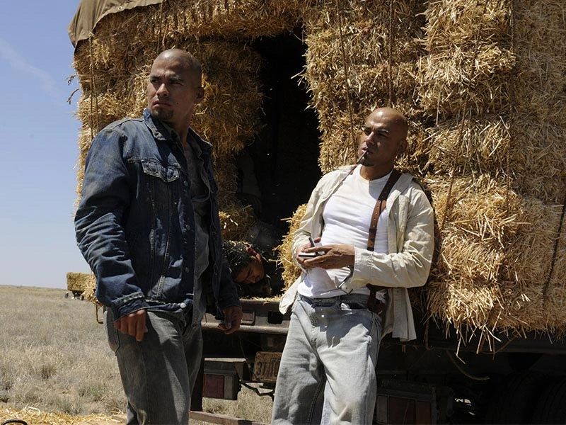
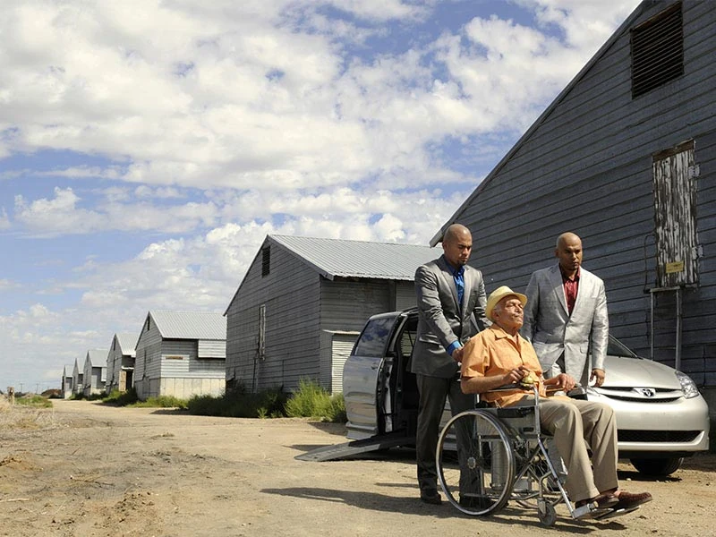
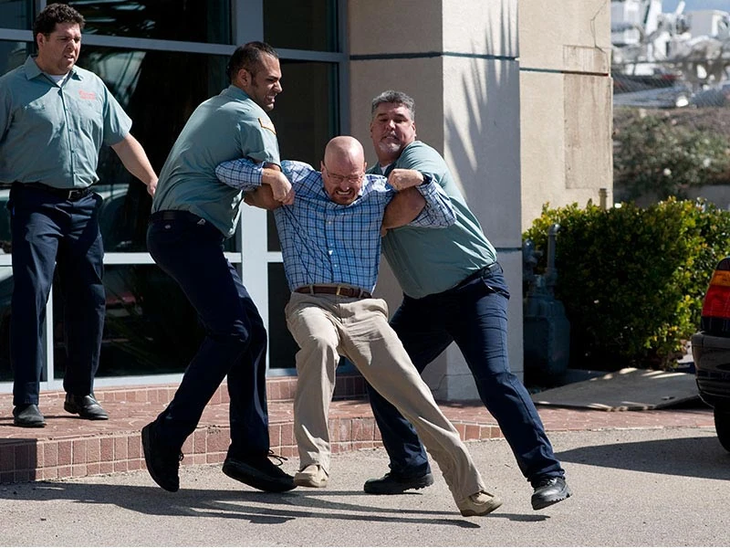
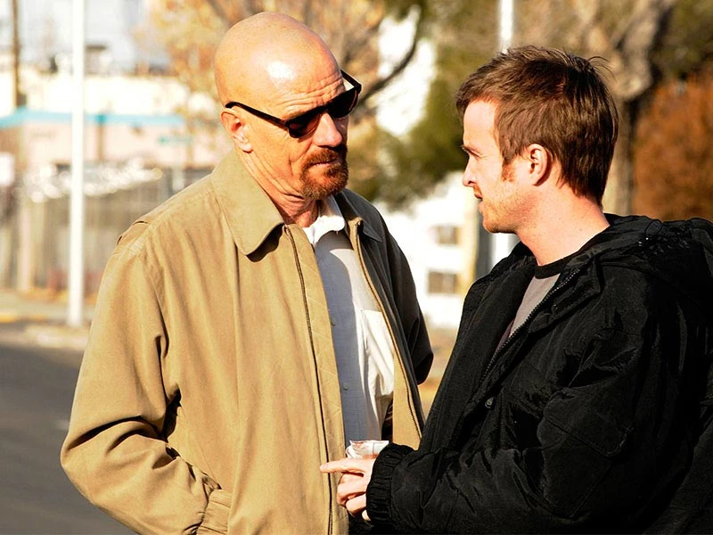
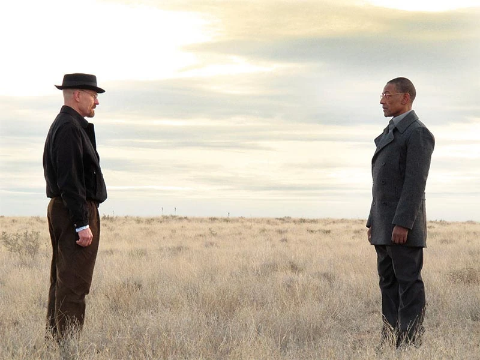

Temporada 3: Expansión del Negocio y el Enfrentamiento con Gus Fring
Poco después del desastre del vuelo 515 de Wayfarer, dos asesinos del cártel conocidos como Los Primos se infiltran en Nuevo México después de matar a todo un convoy clandestino para vengar la muerte de su primo, Tuco Salamanca. Su objetivo: "Heisenberg".
Walter se ve obligado a mudarse a un apartamento y le confiesa a Skyler White que fabrica metanfetaminas, quien promete no divulgar sus actividades delictivas si le concede el divorcio y mantiene las distancias. Jesse Pinkman, por su parte, sale de rehabilitación cambiado por la muerte de Jane Margolis. "Soy el malo", le dice a Walt, quien tiene una imagen de sí mismo bastante diferente: "No soy un criminal", le dice Walt a Gustavo Fring, rechazando la oferta del empresario de 3 millones de dólares para cocinar metanfetaminas durante tres meses ("No Más").
Con la ayuda de Saul Goodman, Jesse logra comprarle la casa a sus padres, quienes pagaron varios cientos de miles de dólares para reformarla. Los primos se reúnen con su tío, Héctor Salamanca, para obtener información sobre el asesino de Tuco. Al mismo tiempo, Saul contrata a Mike Ehrmantraut para instalar un equipo de vigilancia a través de la pared en la parte trasera de la Residencia White para averiguar si Skyler le contó a alguien sobre el secreto de Walt.
Walt desafía a Skyler y entra a su propia casa para mudarse de nuevo. Cuando los primos llegan, Mike, que acaba de poner micrófonos ocultos en la casa de Walt, ve su llegada y alerta a Gus. Los primos son convocados a una reunión y dejan que Walt (que no sabe nada de nada) viva un día más ("Caballo Sin Nombre").
Mientras tanto, Skyler llama a la policía para expulsar a Walt, pero no se atreve a incriminarlo. Como no puede sacar a Walt de la casa, toma represalias acostándose con su jefe, Ted Beneke. Gus convoca una reunión con los primos y su jefe del cártel, Juan Bolsa, quien acepta posponer la venganza hasta que Gus ate su negocio con Walt ("IFT").
Al enterarse de que Jesse está cocinando por su cuenta, Gus le compra metanfetaminas y le da la mitad del dinero que le debe a Walt para obligarlo a volver al negocio. Cuando Walt reaparece para devolver el dinero, Gus revela un superlaboratorio de última generación que ha construido debajo de una lavandería industrial.
Hank Schrader continúa con la investigación de "Heisenberg" a pesar de haber sido reasignado a El Paso, pero un avance en el caso complica las cosas. A falta de efectivo al regresar de un trabajo de cocinero, Jesse intercambia metanfetamina por gasolina. Hank encuentra una cinta de una cámara de seguridad que captó la autocaravana en la gasolinera; cree que la autocaravana se utiliza como laboratorio móvil y comienza una nueva investigación ("Luz verde").
Walt rechaza a Gus nuevamente, lamentando la pérdida de su familia. "Un hombre provee", le dice Gus, "incluso cuando no es apreciado, respetado o incluso amado". Convencido, Walt comienza a cocinar junto a Gale Boetticher, una asistente meticulosa instalada por Gus, y luego se muda nuevamente fuera de la casa. Mientras tanto, Hank conecta a Jesse con la casa rodante, y la casa rodante con el amigo fallecido de Jesse, Combo, un pequeño traficante de drogas que fue asesinado mientras vendía metanfetamina de Blue Sky ("Más").
Cuando Hank llama a Walt para preguntarle si Jesse tenía una casa rodante, Walt hace los arreglos para que destruyan el vehículo en un depósito de chatarra. Badger avisa a Jesse, quien corre a detener a Walt y, sin que él lo sepa, Hank lo sigue.
Mientras Walt y Jesse se acurrucan dentro de la casa rodante, la secretaria de Saul, haciéndose pasar por un oficial de policía, le dice a Hank que Marie Schrader ha tenido un accidente. Hank sale del depósito de chatarra y, cuando se da cuenta de que lo han engañado, la casa rodante está destruida. Gus se reúne con los primos en el desierto y les revela que el asesino de Tuco es en realidad el agente de la DEA Hank Schrader. Luego les da permiso a los dos sicarios para matar a Hank: "Que su muerte los satisfaga" ("Sunset").
Hank, enfurecido por el hecho de que Jesse supuestamente sabe quién es su esposa, ataca brutalmente a Jesse en represalia y es suspendido de la DEA. En el hospital, Jesse planea tomar medidas legales contra Hank. Para apaciguar a Jesse, Walt convence a Gus de despedir a Gale y contratar a Jesse en su lugar.
Más tarde, Gus llama anónimamente y advierte a Hank sobre un ataque inminente. Hank ve a los primos. En el enfrentamiento que sigue, Hank recibe varios disparos de Marco, pero logra dispararle en la cabeza y herir gravemente las piernas de Leonel al inmovilizarlo contra la camioneta de Hank ("One Minute").
Para horror de Walt, Gus hace una aparición en el hospital donde Hank está siendo tratado. Mientras consuela a Marie, Gus recuerda haber conocido a Hank en la DEA y haber visto el frasco de donaciones para la cirugía de Walt. Gus luego le dice a Walt en privado: "Investigo a todos con quienes hago negocios". Mientras Gus se va, Leonel se queda sin palabras. En medio de la conmoción, Mike descarta una jeringa y se escabulle. En México, los federales atacan la hacienda de Bolsa mientras disparan a Bolsa. ("Te veo").
Walt solicita una reunión con Gus para demostrar que él era el verdadero objetivo de los primos y que Gus lo protegió como parte de un esfuerzo por debilitar al Cártel. Walt se va con un contrato de producción de metanfetamina por 15 millones de dólares y una garantía de la seguridad de su familia.
Las negociaciones de Walt coinciden con el creciente descontento de Jesse con la operación de Gus. Anhelando volver a sus días de "fuera de la ley", Jesse obtiene el exceso de metanfetamina en el superlaboratorio. Badger y Skinny Pete asisten a las sesiones de Jesse en NA, donde promocionan la "meta azul" como una táctica de ventas.
Las heridas de Hank lo dejan paralizado. Después de que Marie se entera de que su seguro no cubre las necesidades de Hank, recibe ayuda inesperada de Skyler, quien se ofrece a cubrir sus facturas con dinero que Skyler afirma que Walt ganó "jugando ilegalmente". Después de esto, Skyler le dice a Walt que haga lo que es mejor para la familia, porque cree que Walt es el culpable de lo que le sucedió a Hank ("Kafkaesque").
En el superlaboratorio, una mosca doméstica obsesiona tanto a Walt que detiene la producción. Agotado por la falta de sueño y los sedantes que Jesse le ha echado en el café, Walt describe la noche en que Jane sufrió una sobredosis como el "momento perfecto" para su propia muerte. Walt también revela su encuentro casual con el padre de Jane ("Fly").
Skyler asume un papel más activo en la vida criminal de Walt, citando la necesidad de garantizar que el dinero para el tratamiento de Hank sea "irreprochable". En su primera reunión con Saul, los dos discuten sobre planes de lavado de dinero. A solas con Walt, ella propone que compren el lavadero de autos donde Walt solía trabajar. Ella se encargará de la contabilidad. Jesse promociona la metanfetamina azul a una adicta en recuperación llamada Andrea y descubre que dos traficantes rivales ordenaron a su hermano preadolescente que matara al amigo de Jesse, Combo ("Abiquiú").
Jesse quiere envenenar a los traficantes para vengar a Combo, pero él y Walt descubren que los traficantes en realidad trabajan para Gus. Jesse quiere matarlos de todos modos, a pesar de las advertencias de Walt.
Mike visita a Walt, le explica cómo Jesse está poniendo en peligro la operación y le advierte que si algo sale mal, no dudará en "tomar las medidas necesarias". Walt, temiendo por la vida de Jesse, avisa a Gus, quien obliga a Jesse a hacer las paces con la condición de que los traficantes ya no utilicen niños en sus operaciones.
Más tarde esa noche, la policía descubre el cuerpo asesinado del hermano de Andrea.
Jesse se dirige a la esquina de los distribuidores rivales. Justo cuando Jesse y los distribuidores sacan sus armas, Walt atropella a los distribuidores con su Pontiac Aztek 2004. Uno muere en el impacto y Walt mata al otro de un disparo. Walt le dice a Jesse que corra ("Medidas a medias").
La intervención de Walt enfurece a Gus, quien reinstala a Gale como asistente de Walt mientras él persigue a Jesse. Walt se